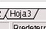
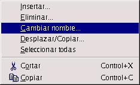
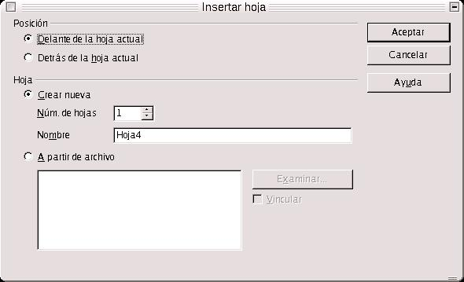

| Herramientas en GNU/LINUX para estudiantes universitarios: La suitte ofimática OpenOffice.org 1.0.1 | ||
|---|---|---|
| Anterior | Capítulo 3. OpenOffice.org Calc | Siguiente |
Muchas veces es necesario mostrar los datos en varias hojas de cálculo, bien porque es necesario clasificarlos en categorías, y cada categoría debe estar representada en una hoja entera, o bien porque la densidad, o gran número de datos hace que tengamos que presentarlos en varias hojas, con el fin de mejorar su comprensión y lectura.
Pero, ¿puedo pasar datos de una hoja a otra?. Sí. Incluso, hacer gráficos en una hoja con datos que están en otra. ¿Esto a qué contribuye?, a una mejor ordenación y clasificación de los datos. Incluso, puede ser necesario que yo tenga los datos en varias hojas de cálculo, pero sin embargo los gráficos están en una sóla. Si tengo muchos gráficos, puede ser interesante juntar todos, previamente ordenados, en una hoja de cálculo donde estén contenidos todos, porque luego se hace más fácil localizarlos para copiarlos y pegarlos en un texto con un procesador.
Para comprender mejor esta sección vamos a realizar el siguiente ejercicio.
Supongamos que estamos realizando la gestión de un curso cualquiera, y que tenemos una estadística de grado de satisfacción con respecto al curso. Copiamos los encabezamientos de las siguientes tablas en tres hojas de cálculo (copiar todo en la primera hoja, y después hacer copiar y pegar en las demás) :
En la primera hoja se contendrán los datos del primer trimestre, en la segunda los del segundo, y los del tercer trimestre en la tercera.
La cuarta hoja servirá para introducir los gráficos.
Una vez copiados los encabezamientos, introducimos los datos, en un baremo que va desde 0 (grado de satisfacción mínimo) hasta 5 (grado máximo).
Como OpenOffice.org Calc inserta por defecto 3 hojas, y hemos dicho que los gráficos irán en la cuarta, tenemos que insertar una nueva. Para ello, llevamos a las pestañas situadas en la zona inferior izquierda del entorno de trabajo, pulsamos sobre la pestaña de la Hoja 3,

y aparece el entorno de trabajo de dicha hoja. Ahora pulsamos con el botón derecho del mouse sobre la misma pestaña, y aparecerá un cuadro de diálogo, con una serie de acciones. Nos movemos hasta Insertar, mostrándose un cuadro de diálogo en el que se nos pide que indiquemos la posición de la nueva hoja (si va delante o detrás de la hoja actual con la que estemos trabajando), el número de hojas nuevas a crear y el nombre. Para este caso, nos va a interesar que la nueva hoja esté en la última posición, detrás de todas. El nombre, podría ser Gráficos, por ejemplo.


Con los datos ya introducidos en las hojas 1, 2 y 3, podemos realizar gráficos en la hoja de Gráficos.
El procedimiento para la inserción de gráficos, ya se ha comentado. La única diferencia es que a la hora de definir el área de datos, hemos de decirle al OpenOffice.org, de alguna forma, que los datos proceden de otra hoja. Lo que se hace, es, cuando aparece el cuadro de diálogo Autoformato Diagrama, en el momento en que se nos pide que indiquemos dicho área, moverse hacia la hoja donde están los datos (pulsando en la pestaña inferior correspondiente), e inmediatamente y de forma automática, el computador escribe la referencia a dicha hoja en el campo Área, que se representa con el signo de dólar seguido por el nombre de la hoja ($Hoja1, $Hoja2).
Para este ejercicio es suficiente con realizar tres gráficos, que muestren los resultados del grado de satisfacción medio de los alumnos en cada trimestre.
Además, en la cuarta hoja podemos insertar funciones o fórmulas que tengan como operadores valores introducidos en las hojas 1, 2 y 3. Para ello insertamos la función que deseamos calcular, e indicamos en el AutoPiloto de Funciones que los datos proceden de otras hojas distintas de la actual.